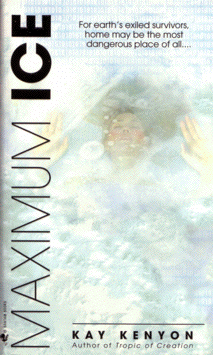

Maximum Iceby Kay Kenyon
publisher: Bantam Books
Fiction, 418 pages | 
(book cover art, Copyright ©2002 Kay Kenyon)
Used with Permission. |
Return to the Book MenuPrevious|Next
Description:
After a long voyage, the spaceship Star Road has finally returned to Earth Ñ only to find it almost completely covered with an unusual crystal with the appearance of ice. This ice is growing, however, and will soon take over the planet. While the Ship Mother of Star Road, newly awakened from her decades-old slumber, investigates how to stop the growth and restore the planet she left, she discovers that many of Earth's current inhabitants aren't so eager to see it go away....
Recommended for: students interested in immortality, the future of earth, astronomy, adventure. (Note: read the did-you-read questions before you choose this book, in case you are squemish.)
Did-you-read questions:
Deadline: February 1, 2005.
These should be easy questions, but you should have the questions ready and keep an eye out during your reading. Each question should be answered with 1-2 sentences.
Note: these questions are not probably not the most important part of the book! Your essay will not have to cover these questions!
- What group on earth are cannibals?
- What does Star Road's first mate hope to get in return for his part of the deal he makes?
- Who is Snow Angel, really?
- In what specific way is Father Donicetti different from the sort of priest you might find in a church today?
- What is the name of the vehicle that takes Zoya to the core?
Report Questions:Deadline: Peer Review Session on February 8, 2005; paper due February 10, 2005.
You should write a 3 - 4 page essay on one of the following questions. Your essay should include examples and references to the book, unless otherwise specified. Page number references are sufficient for citing material from the primary book. If you use outside materials, cite your sources in full. If you would rather write on a different topic, you may, but clear it with Mr. Howe or Ms. Sullivan first.
- Throughout this book there are several ways in which human beings pursue life beyond the typical human life-span. While there are some benefits, there always seems to be a price, too. Compare these methods of reaching beyond the grave and pick the one that is most desirable. Try to examine more than two methods.
- Religion (and its corruption) is another theme in this book. What are some of the ways that modern religion has "evolved" into other forms in this book. What were/are your reactions to these points?
- Does the power struggle on the ship seem realistic to you? (Which side would you pick?) Does its resolution ring true?
- Many people in this book make sacrifices. Do you think the things they achieve are worth it?
Graphic and Presentation:
Deadline: February 21 - March 3, 2005.You will give a 10 minute presentation on both of the following:
- Convince your peers that they should (or should not) read this book. (This may include a brief summary of the book.) Give examples of what was cool or worthwhile in the book, and what you got out of it (or didn't).
- Describe a (realistic) science idea that you learned about in this book, citing information from at least 2 external sources (other than the dictionary). If you would like help choosing or understanding an idea from your book, you are invited to come talk to Mr. Howe or Ms. Sullivan.
Note: This presentation should not be just a reading of your paper!Along with this presentation, you should have a graphic that will go with it. A Power Point presentation is recommended, but if you have a special idea for a something else, such as a model, an original video presentation, or a well done drawing/ painting/ sculpture/ etc., you may do so, provided it involves a similar level of effort and polish. Speak to Mr. Howe or Ms. Sullivan first if you are considering an alternate graphic format to the Power Point.
Return to the Book MenuPrevious|Next